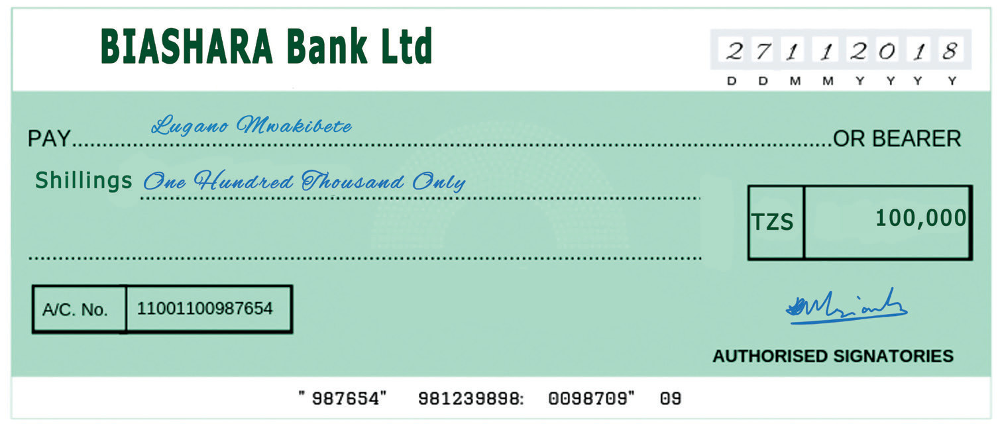
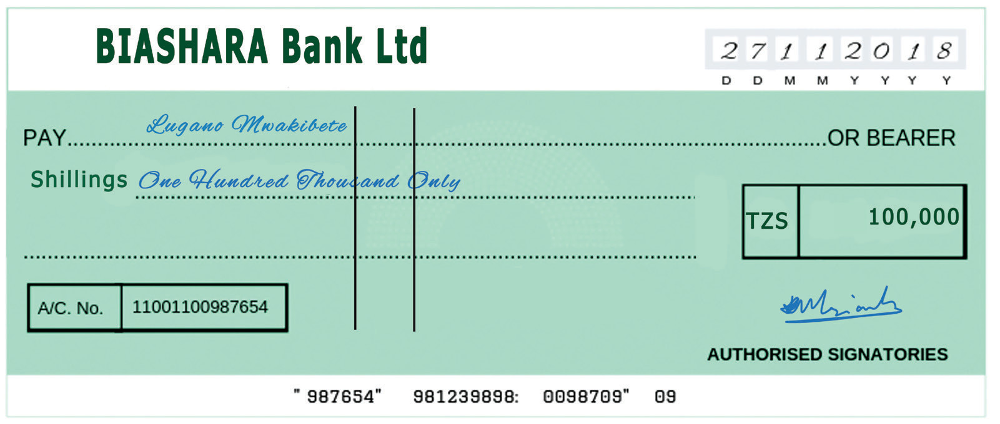

Book-keeping for Secondary Schools

6
Student’s Book Form Two
of the security risk involved.
The drawer has an option to issue an
open cheque or a crossed cheque. An
open cheque instructs the drawer’s bank
(drawee) to pay the amount stated to the
payee. The payment can either be made
in cash or by depositing the amount in the
payee’s bank account. Figure 1.2 illustrates
an open cheque.
The cheque is open because it does not
have a crossing. This implies that the
amount in the cheque can be paid to the
payee in cash. The payee, however, still
has an option to deposit the cheque in his/
her account.
On the other hand, a crossed cheque
instructs the bank to deposit the amount
stated on the cheque to the payee’s
account, without the option for the drawee
to pay the amount in cash to the payee.
Crossing is normally done by drawing or
indicating two vertical lines on the face
of the cheque. Some banks may add the
words ‘A/C payee only’ which insist
that the amount has to be deposited to the
payee's account. For security purposes,
most banks would by default have the
cheques crossed, but give the drawer an
option to ‘open’ the cheque by signing
on the vertical lines crossing the cheque.
Figures 1.3 and 1.4 show the two types of
crossed cheque.

Figure 1.2: Open cheque

Figure 1.3: Crossed Cheque without the words ‘A/C payee only’